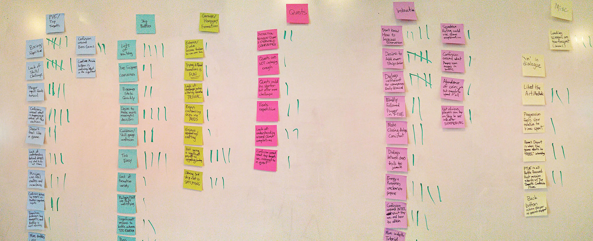

Iteration of game systems using feedback gathered from playtesting.
I worked closely with engineers, product, and design to implement features and gather playtest data for the Alpha launch of a mobile RPG - CloudBreakers.
My contribution
I ideated, designed, and prototyped major in-game systems such as Dossier, Crafting, Social, and the Mission briefing pages using Sketch and Photoshop. I co-facilitated the alpha playtest consisting of 40 players with my supervisor Brian.
Duration
4 months
Role
Usability study
UX design
Prototyping
Supervisor
Brian Lin
The Situation
I began my work term at Uken Games' CloudBreakers team at the beginning of 2016. This coincided with the Q1 Alpha release. Up until this point all feedback had been internal. The team decided to elicit external feedback from end users and other game developers to validate the decisions made.
A typical Friday at Uken.
Design objectives
Creating a product that provides the player with a pleasant and intuitive experience.
Designing with accordance to budget and timeline constraints.
Designing systems that are compatible with past builds and in accordance with game design specifications, while keeping scalability in mind.
Designing the product with the end user’s satisfaction and needs as the primary motivation.
Options explored
During the ideation process, I worked with my mentor and the game designer to flesh out the specifications and requirements of the system. The Dossier is used to showcase player progression by tracking their achievements and unlockables in the game.
Whiteboard ideation
After decision on a general direction and understanding what the player expectations are, explorations on the different ways of executing on the requirements took place using low to mid fidelity mocks. These mocks are drafted up quickly using placeholder images and grayscale colours to prioritize speed over form.
From pen and paper to Sketch.
Ultimately a decision was made to eliminate all but one of the candidates from the low fidelity mocks. The column based representation of the achievements proved to satisfy our design needs the best. The rationale for this is because it is unlikely that there would be more than 5 achievement categories for the players to track. By displaying all of the achievement progresses in a horizontal fashion, the player is presented with all of the key information they need. It was deemed unnecessary to have an "detailed view" for each achievement category since the information presented in the details panel is repetitive.
Luckily my work term coincided with the Alpha playtest of CloudBreakers. The UX team had concerns in some of the general game design and gameplay directions. But in order to make our arguments more concrete we required validation in the form of external user feedback.
The UX team suggested that a closed beta would provide valuable user feedback for the studio. The playtest was designed in the form of a Longitudinal Diary user studies, and over 40 users participated in the playtest.
TypeForm.com was used to produce the playtest diary questions, and we enlisted help from UserTesting.com for feedback in the form user-emotion and user-behaviour videos (along with gesture recordings). We also got the chance to speak with some users in person for more in-depth qualitative feedback.
Typeform.com was used to gather quantitative feedback
Playtest results and findings
In total, 171 entries were recorded, and 40 players filled out at least one diary entry with detailed comments and feedback surrounding how they felt about the game emotionally. The average player session was around 25 minutes in length.
Two portions of the analysis was performed, a quantitative analysis where the users are asked to select from a list of terms that corresponded to their emotional state, and a more complex analysis that was based on qualitative commentary from free-form questions.

We broke down the data so we could correlate commonalities between the participants before presenting the findings to the entire team.
Quantitative findings
58
Fun
60
Satisfying
41
Frustrating
67
Buggy
65
Confusing
25
Intuitive
From these tables it could be seen that there is an approximate balance between players who reported the game as being confusing, fun, buggy, and satisfying. It is possible that the amount of bugs and glitches player encountered definitely could have negatively affected the player experience.
The initial observations made here indicate that there are a sizeable number of players which found parts of the game to be enjoyable, fun, and interesting. However, since “Confusing” and “Intuitive” indicate opposite reactions when used to describe player experiences, a conclusion could be drawn that the interface and interactions players are faced is more confusing than it is intuitive in its current state.
In addition, it can be noted that “Frustrating” occurred much more frequently than should be desired. This is indicative that the current design of the game is problematic as certain aspect of the game does cause frustration to the users.
Qualitative findings
All of the feedback was placed into one of three major buckets — Core Systems, Supporting Systems, and Others. We grouped the similar comments together to generate the following insights.
Core system findings:
6
Boring/repetitive (PvE)
6
Lack of skill (PvE)
6
Lack of challenge (Battles)
Players wished to make more meaningful decisions more often. A number of players indicated that they were able to complete entire quests chains and mission areas without looking at the screen at all. The lack of meaningful decision-making coupled with the severe lack of challenge results in players feeling bored with the gameplay.
Supporting system findings:
4
Enhancing/evolve does not feel impactful
3
Unlocking additional formation slots is satisfying
3
Lack of understanding around quest completion workflow
There were numerous comments about players not understanding the motivation for their actions in the game — evolving and enhancing, destroying tap targets, purpose of the quest and mission rewards. It has been noted that there is a thematic disconnect between interacting with tap targets and the Battle engagements.
However on the positive side, a large number of players did express feelings of satisfaction with the increase in progression and power that comes along with making use of the crafting and enhancing system.
Other findings:
5
Dialogue ineffective for conveyance
5
Desire to add more ships earlier
4
Tutorial is ineffective
The players find that the current tutorial and instructions systems placed in the game is insufficient for relaying the game mechanics. The current tutorial being completely focused on the Battles sets the precedent for the player to expect an overall PvE experience akin to Battles.
The overall player progression felt slow and the game felt too easy. Connecting this to the concept of Flow, players are more skillful than we initially anticipated, and are not being sufficiently challenged.
Players are bored because they are not being sufficiently challenged.
Key findings
After discussing and evaluating all of the responses, for both the frequency of the issue, as well as how the responses were articulated, three common themes were discovered:
Players derived immense satisfaction in seeing contribution to their own success
Users want to feel like they are earning their rewards and victories; the players find the rise in challenge to be satisfying.
All forms of progression should feel immediately impactful and communicated to the player clearly
There's a lack of feedback in terms of player progression. This lack of clear feedback reduces the player incentive to actually progress within the game.
Desire to better understand the game’s core mechanics and supporting systems
The game itself is classified as mid-core. As a result, there are a large number of intersecting systems within the game. However, not every system is sufficiently explained, which gives rise to player confusion and frustration.
The game is definitely not ready to compete on the iOS or Android App market in its current state, and will require a lot more work and overhauls across all areas of the game before moving into the beta stage.
Recommendations
On the PvE side, implementing or reworking the current PvE workflow to make the tap-targets feel more interactive or more engaging will lead to greater player satisfaction. Players should be given more agency to make meaningful decisions. On the battle side, the battles could be more challenging; players wish to be clearly rewarded for making strategically-viable decisions.
Player progression and game difficulty could be increased at a faster rate. This will allow players to spend more time in the more interesting areas of the game. Being rewarded with spending time wisely also ties into the first point mentioned in the conclusions of making meaningful decisions both inside the core system as well as the supporting systems.
The onboarding system needs to be revised. As it stands the system fails to sufficiently instruct players on the game systems.
The large amount of bugs definitely contributed to the overall level of frustration players felt. The engineering team could focus on eliminating major bugs before implementing new features.
What we changed
Based on the research findings we made a number of changes. These changes were made to provide players with more agency, transparency, and information to make smart decisions.
We focused on providing more information to players upfront such that they can have an easier time understanding how the different game mechanics interact.
More information is provided on the garage crafting screen.
We also updated the onboarding system such that instructions are provided explicitly through tutorial battles instead of being delivered through character dialogue.
Instructions are much more explicit, and feedback is provided immediately.
Outcome & update
CloudBreakers was rebranded to CloudBreakers: Sky Tactics in 2016, and published to the Google Play store in Southeast Asia as a soft launch.
Unfortunately the product did not meet the company KPIs during the soft launch. The game was ultimately taken off the Google Play store, and the project was discontinued in early 2017.
In this instance, usability testing proved an accurate predictor of product success. In organizations I'll be working with in the future, I'll continue to advocate for the benefits of product prototyping and usability studies. If you have an Android system and would like to check out CloudBreakers for yourself, a number of three-party channels still host the APK. They could be found at the link below.